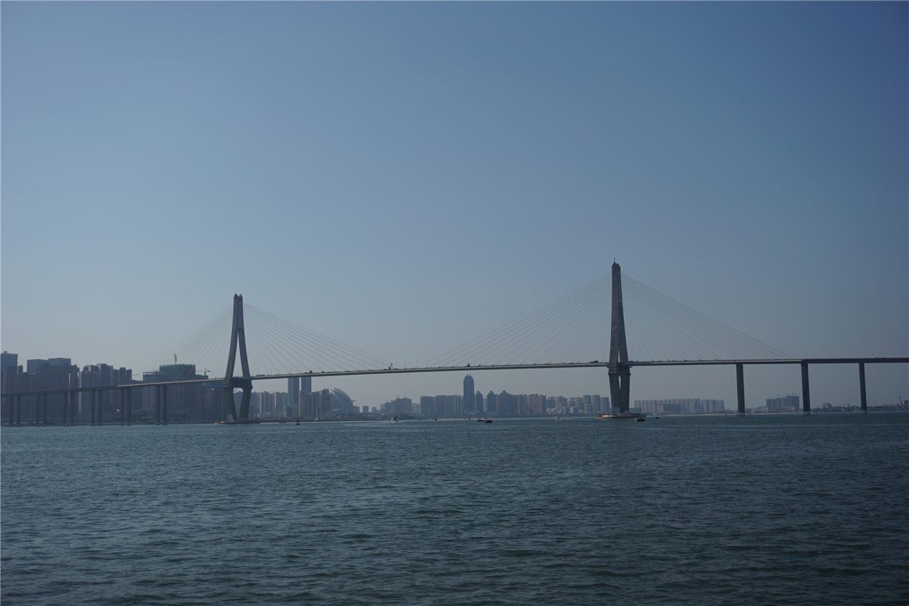
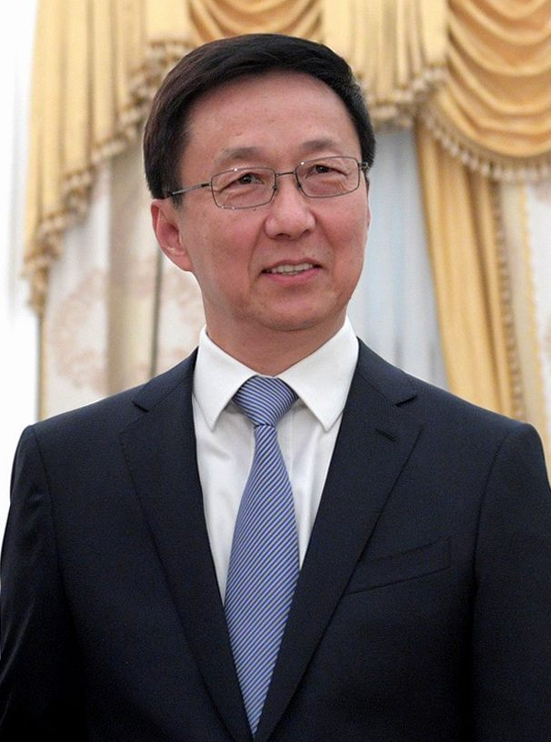
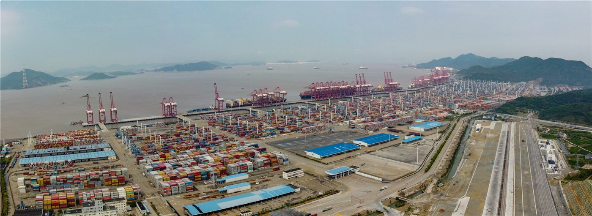
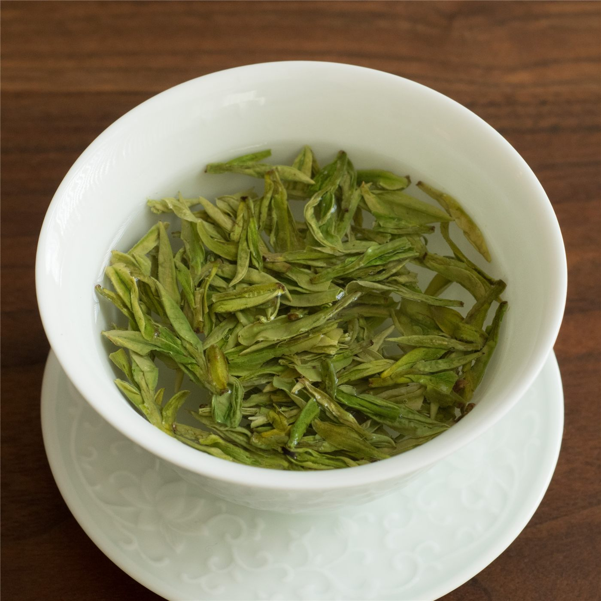

橋중국
중국중국, EU에 '자유무역·대화' 강조… 통상 협력 의지
중국 외교부, EU와의 경제·통상 관계는 상호이익이라며 보호무역 자제 촉구.
중국 외교부, EU와의 경제·통상 관계는 상호이익이라며 보호무역 자제 촉구.

왕이 외교부장, 글로벌 거버넌스 개혁 방향 제시. 중국, 7월 세계 AI 회의 개최 예정.

상무부 집계, 서비스 교역 확대 지속. 디지털·관광·운송이 견인.

수출 증가폭이 둔화되며 흑자가 축소됐다. 대외 수요 약화 신호로 읽힌다.

세계 최초의 부유식 동력위치제어(DP) 양식 플랫폼인 '잔장완 1호(湛江灣1號)'가 첫 수확을 성공적으로 마쳤다. 심해 양식 기술의 상용화 가능성을 보여준 사례로 주목된다.
중국 외교부가 다카이치 사나에 일본 총리의 중국 관련 발언에 대해 입장을 밝혔다. 양국 관계의 안정과 상호 존중을 강조하는 원론적 대응이었다.

중국 외교부가 이스라엘이 레바논에서 군사행동을 멈추지 않고 있다는 지적에 대해 입장을 밝혔다. 중국은 긴장 완화와 대화를 통한 해결을 강조했다.
중국 외교부가 미국의 대만 무기 판매에 반대하는 자국의 입장은 일관되고 명확하다고 밝혔다. 양안 문제를 둘러싼 각국의 입장 차가 다시 확인됐다.

한정 중국 국가부주석이 캐나다와 덴마크에서 온 손님을 접견했다. 경제·통상과 인적 교류를 비롯한 협력 방안이 논의된 것으로 알려졌다.

2026 중국 브랜드 포럼이 허베이성 슝안신구에서 열렸다. 과학기술 혁신과 사회적 책임을 통해 브랜드 가치를 높이자는 논의가 중심이 됐다.
제32회 베이징 국제도서전(BIBF)이 개막했다. 세계 각국의 출판사와 저작권 관계자가 모여 책과 콘텐츠, 저작권 거래를 선보이는 문화 교류의 장이다.

반려동물 등 '잇(它)경제'가 문화·관광 소비의 새로운 지형을 만들고 있다는 분석이 나왔다. 반려동물과 함께하는 여행·체험·상품 시장이 빠르게 커지고 있다.

중국 기업이 단순한 제품 수출을 넘어 '가치의 해외 진출(價值出海)'을 이루려면, 자사의 이야기를 잘 풀어내야 한다는 전문가 제언이 나왔다.

중국의 '특산품(特産)' 목록이 새롭게 단장됐다. 단순한 지역 명물에서 나아가 브랜드 경쟁력으로 승부하는 흐름이 뚜렷해졌다.